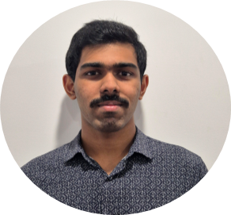

Helped transform a non-portable respiratory-testing system into an accurate handheld prototype.

Available full-time from January 2027
Mechatronics Engineer
Robotics • Embedded Software • Autonomous Systems
Final-year Bachelor of Engineering (Honours) student at UTS, graduating in November 2026 and on track for First Class Honours. I have practical experience across ESP32 firmware, Raspberry Pi robotics, ROS 2, computer vision, NVIDIA Jetson evaluation, requirements definition and hardware-software integration.
Looking forEarly-career robotics and autonomous systems roles focused on embedded software and systems integration.
Sydney, Australia
Engineering snapshot
Building complete systems, not isolated parts.
Industry work and projects across embedded firmware, sensing, autonomy and system integration.
Defining requirements and evaluating NVIDIA Jetson and camera hardware for a modular rooftop system.
ROS 2, LiDAR, computer vision, path planning and motion control on Raspberry Pi.
Sense→Decide→Control→Integrate
75.67Current WAM
2Engineering engagements
5Featured engineering projects
3High Distinction projects
About
From coursework to shipped hardware.
I am a final-year Bachelor of Engineering (Honours) student majoring in Mechatronic Engineering at UTS, on track for First Class Honours and graduating in November 2026. I started my degree at Macquarie University in 2022 and transferred to UTS in 2024 to focus more directly on robotics and embedded systems.
My work spans embedded firmware, ROS 2 robotics, computer vision and the full stack that connects hardware to software: from tuning accelerometer thresholds on a custom PCB, to leading the embedded architecture on a clinical device prototype, to building a tour-guide robot that recognises paintings and narrates them.
I like working at the point where mechanical, electrical and software constraints all meet, because that is usually where the real engineering problem is.
Systems thinking, backed by practical testing.
My strongest work sits at the boundaries between software, electronics and mechanical hardware. I focus on interfaces early because that is where integration problems usually appear.
01
Define the whole system
Clarify required behaviour, operating conditions, constraints and subsystem responsibilities before implementation.
02
Design clear interfaces
Structure data flow, firmware states, sensor inputs and hardware connections so each part can be tested independently.
03
Integrate early
Bring subsystems together before the final stage, then debug timing, communications and physical constraints while changes are manageable.
04
Validate with evidence
Test under realistic conditions, record what failed, refine the design and confirm performance after integration.
Selected work
Projects with clear engineering evidence.
The case studies focus on the architecture, my contribution, the decisions made and how the system was tested or benchmarked.
CAPSTONEIn progress
Follow-Me Cooling Cart
Developing an autonomous battery-powered cart for reliable user tracking and stable transport in outdoor environments.
Outdoor autonomy + system integration
ROS 2Raspberry PiLiDARYOLOPython
Perception, planning and motion
C++ / AIIn progress
Osprey Chess Engine
A self-initiated C++ UCI chess engine focused on search optimisation, evaluation strength and iterative performance development.
Wins against a ~1900 Elo chess bot
C++UCIBitboardsAVX2Python
Search + benchmarking
EMBEDDEDHigh Distinction
Wearable Fitness Tracker
A custom wearable integrating embedded firmware, calibrated step tracking, custom PCB hardware and a real-time interface.
C++ESP32ADXL335Arduino Framework
Firmware + sensor integration
ROBOTICSHigh Distinction
Follow-Me TurtleBot
A person-following robot using YOLOv8 and LiDAR with perception, navigation and control integrated in ROS.
ROS 1YOLOv8LiDARMATLAB
Vision + navigation
EMBEDDED SENSINGHigh Distinction
Car Safety System
An Arduino-based prototype for real-time obstacle detection with escalating visual and audible driver alerts.
ArduinoUltrasonic SensorsLCDLEDs
Sensing + validation
Experience
Engineering work with real integration constraints.
The engineering roles take priority here. Earlier retail and warehouse work is kept compact so the technical work has room to show what I actually did.
Aug 2026 - Present
Embedded Software Assistant
PAVEMENT MANAGEMENT SERVICES
Defining software and functional requirements for a Phase 1 modular rooftop camera system, including camera input, data handling and compute-platform requirements. I am also evaluating NVIDIA Jetson edge-computing platforms and camera hardware, and supporting the embedded software architecture and hardware-software interfaces.
Current focusRequirements definition, Jetson evaluation, camera selection and system interfaces.
May 2026 - Aug 2026
Engineering Intern | Embedded Software Lead
OPTIK CONSULTANCY | CLIENT: ROYAL NORTH SHORE HOSPITAL
Led the ESP32 embedded software architecture for a portable respiratory-testing prototype, using modular firmware for touchscreen control, sensor acquisition and processing, test sequencing, system control and data storage. I designed the finite state machine governing the interface and complete respiratory-test workflow, then supported end-to-end integration and testing.
Measured outcomeAU$70,000 system → handheld prototype under AU$300
Helped transform a non-portable respiratory-testing system into an accurate portable prototype.
Technical challengeTurning a complex test workflow into reliable embedded behaviour. I approached it with modular firmware, explicit state transitions and repeated full-workflow testing.
Additional experienceMYERChristmas Casual | Oct 2023 - Feb 2024 INDUSTRIAL ENGRAVING SOLUTIONSWarehouse Assistant | Sep 2023
Customer service and accurate transaction handling during high-volume Christmas trading.
Prepared, inspected and packaged high-volume solar-panel labels while maintaining quality and safety standards.
Technical capability
A practical mechatronics toolkit.
Grouped around the work I can apply directly, rather than one long list of technologies.
Software
PythonC++MATLAB/Simulink
Robotics & Autonomous Systems
ROS 1ROS 2Nav2Sensor FusionPath Planning
Embedded & Electronics
ArduinoSTM32Raspberry PiESP32NVIDIA JetsonPWM Motor ControlPCB Design & AssemblyElectronic Testing
AI & Computer Vision
YOLOOpenCVDeepSORT
Systems & Validation
Requirements DefinitionSystem IntegrationVerification & ValidationFault IsolationTechnical Documentation
Tools
GitUbuntu LinuxAltium DesignerWSL
Resume
The full resume, read in place.
Everything from the PDF, laid out on the page itself so there is nothing to download just to see it. A PDF copy is still available if you want one.
Rahul Narayanan
Professional summary
Final-year Bachelor of Engineering (Honours) student in Mechatronic Engineering at the University of Technology Sydney, graduating in November 2026 and on track for First Class Honours. Experience in robotics, embedded software and autonomous systems through industry and project work using ESP32, Raspberry Pi, ROS 2, computer vision and sensor integration. At Optik Consultancy, helped transform a non-portable AU$70,000 respiratory-testing system into an accurate handheld prototype costing under AU$300. Seeking early-career robotics and autonomous systems roles focused on embedded software and systems integration.
Education
Bachelor of Engineering (Honours) in Mechatronic Engineering (WAM: 75.67)Feb 2024 - Nov 2026
UNIVERSITY OF TECHNOLOGY SYDNEY
Experience
Embedded Software AssistantAug 2026 - Present
PAVEMENT MANAGEMENT SERVICES
- Defining software and functional requirements for the Phase 1 modular rooftop camera system, including camera input, data handling and compute-platform requirements.
- Researching and evaluating NVIDIA Jetson edge-computing platforms and camera hardware based on processing requirements, resolution, frame rate, connectivity and software compatibility.
- Supporting development of the embedded software architecture and hardware-software interfaces between cameras, NVIDIA Jetson edge-compute hardware and supporting modules.
Engineering Intern | Embedded Software LeadMay 2026 - Aug 2026
OPTIK CONSULTANCY | CLIENT: ROYAL NORTH SHORE HOSPITAL
- Led development of the ESP32 embedded software architecture for a portable respiratory-testing prototype, structuring firmware into modular components for touchscreen control, sensor acquisition and processing, test sequencing, system control and data storage.
- Designed and implemented finite state machine-based interface logic governing touchscreen inputs, screen transitions and complete respiratory-test workflows throughout the prototype operating sequence.
- Integrated sensor acquisition, touchscreen control and data-logging functionality within the ESP32 firmware and supported testing of the complete respiratory-test workflow.
Achievement: Helped transform a non-portable AU$70,000 respiratory-testing system into an accurate, portable handheld prototype with a build cost of under AU$300.
Christmas CasualOct 2023 - Feb 2024
MYER
- Delivered customer service and processed transactions accurately during high-volume Christmas trading, balancing competing priorities while maintaining clear communication, reliability and attention to detail.
Warehouse AssistantSep 2023
INDUSTRIAL ENGRAVING SOLUTIONS
- Prepared, inspected and packaged high-volume solar-panel labels to tight production deadlines, identifying defects and maintaining quality, accuracy and workplace safety standards.
Projects
Follow-Me Cooling CartFeb 2026 - Present
INDIVIDUAL CAPSTONE PROJECT
Developing an autonomous battery-powered cooling cart for reliable user tracking and stable transport in outdoor environments.
- Designing a multi-sensor user-tracking and localisation system using LiDAR and computer vision to handle dynamic outdoor conditions.
- Developing real-time path planning, obstacle avoidance and motion control on Raspberry Pi for consistent system performance.
ROS 2Raspberry PiLiDARYOLOPythonPWM Motor ControlUbuntu 22.04
Osprey Chess EngineJun 2026 - Present
PERSONAL PROJECT
Self-initiated C++ chess engine project focused on intelligent decision-making, search optimisation, performance evaluation and iterative engine development.
- Developing Osprey, a C++ UCI chess engine integrated with a Python application, implementing iterative deepening, Principal Variation Search, alpha-beta pruning, quiescence search, transposition tables and advanced move-ordering heuristics.
- Benchmarking and optimising engine performance through automated testing, perft validation and self-play, achieving wins against a ~1900 Elo chess bot while continuing to improve playing strength against Stockfish.
C++PythonMultithreadingAVX2BitboardsNNUEUCINumPypython-chessTkinter
Wearable Fitness Tracker | High DistinctionFeb 2026 - Jun 2026
TEAM PROJECT
Developed a wearable fitness tracker integrating custom PCB hardware, embedded firmware, sensor-based step tracking and real-time user interface features.
- Designed embedded software architecture using a finite state machine to manage step tracking, calibration, self-test, stopwatch, health, game and settings modes.
- Implemented ADXL335-based step detection using calibrated acceleration data, magnitude calculation, hysteresis thresholding and cooldown filtering to reduce false counts.
C++Arduino FrameworkESP32ADXL335OLED DisplayAltium DesignerPCB DesignGitHub
Follow-Me TurtleBot | High DistinctionOct 2025 - Nov 2025
TEAM PROJECT
Developed an autonomous TurtleBot for human following using vision and LiDAR-based obstacle avoidance.
- Developed a human-following system using YOLOv8 computer vision and LiDAR sensing for real-time target detection and tracking.
- Implemented obstacle avoidance and tracking logic to maintain stable navigation while following a moving user.
ROS 1YOLOv8LiDARUbuntu 20.04 on WSLMATLAB
Car Safety System | High DistinctionOct 2024 - Nov 2024
INDIVIDUAL PROJECT
Built an embedded prototype for real-time obstacle detection and driver attention alert.
- Designed and developed an Arduino-based system integrating ultrasonic sensing, distance measurement and real-time alert generation.
- Implemented visual and audible warning logic using LCD, LED and buzzer outputs to improve driver awareness.
ArduinoUltrasonic SensorsPotentiometerLCDLEDsBuzzers
Skills
Software
PythonC++MATLAB/Simulink
Robotics & Autonomous Systems
ROS 1ROS 2Nav2Sensor FusionPath Planning
Embedded & Electronics
ArduinoSTM32Raspberry PiESP32NVIDIA JetsonPWM Motor ControlPCB Design and AssemblyElectronic Testing
AI & Computer Vision
YOLOOpenCVDeepSORT
Systems & Validation
Requirements DefinitionSystem IntegrationVerification & ValidationFault IsolationTechnical Documentation
Tools
GitUbuntu LinuxAltium DesignerWSL
Core skills
Analytical Problem-SolvingTeam CollaborationTechnical CommunicationAdaptability
Availability
Available full-time from January 2027.
Professional documents
Reflection and application evidence.
Supporting documents from my Professional Experience Review portfolio, available directly as PDFs.
Task 1a
Internship Reflection
Reflection on my Optik Consultancy internship, including what I expected, what I learnt, the value I can offer an employer and how the experience shaped the engineering roles I want to pursue.
View Reflection PDFIndustrus Engineering
Graduate Program Cover Letter
Cover letter addressing the six selection criteria for the Industrus Engineering Graduate Program using examples from industry experience and engineering projects.
View Cover Letter PDFContact
Get in touch.
If my work lines up with what your team is building, I would be happy to have a conversation.
Availability
Interested in robotics, autonomy and embedded systems.
I am seeking early-career robotics and autonomous systems roles focused on embedded software and systems integration, with full-time availability from January 2027.